April 8 - 9, 2016
| The Baptist Collegiate Ministry at Oklahoma
City University invited the International Students on a weekend retreat at
Falls Creek. Eric and I went along as volunteers. We really enjoyed
the time with the students as well as with our favorite family: Wei,
Jiayi, Isabel, Melody, and Jiayi's parents. It was a good weekend! |
|
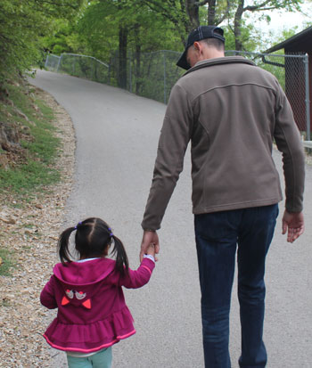 |
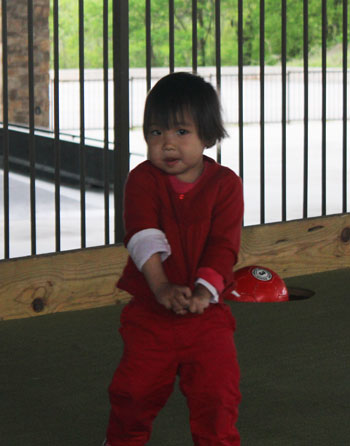 |
| Isabel thinks Uncle Eric is "all that." She loves
him! |
Melody, however, finds him terribly frightening. Here he had just tried to hold her, not understanding that NO ONE except Mom is allowed to do that. |
Melody is still a little teary-eyed after her encounter with scary Uncle Eric, (who is still lurking in the corner!) |
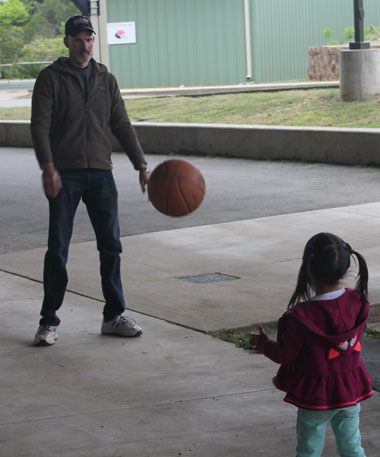 |
| No worries, Isabel will take all the Eric attention she can get. | |
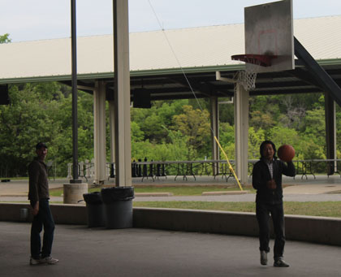 |
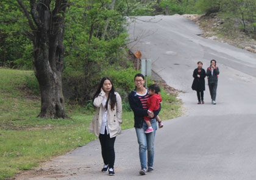 |
| Eric and Jiayi's step-dad shooting hoops | The gang on a walk |
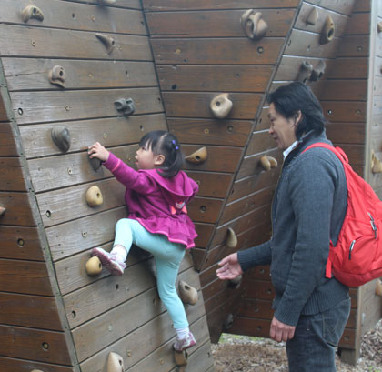 |
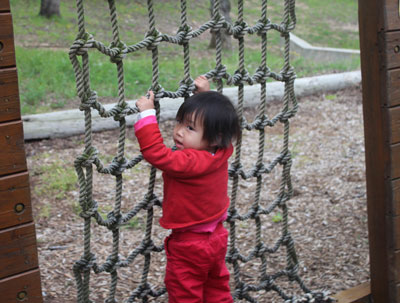 |
| Isabel, rock climber in training. She is fearless. | Melody gets the idea, she's just a little young for this yet. |
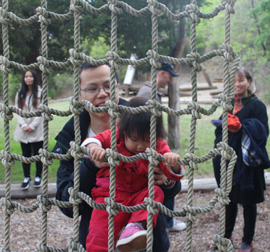 That's why God created Dads - they're great at giving a boost |
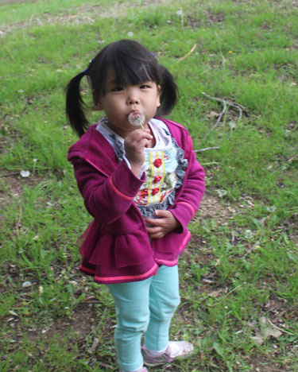 |
| Isabel's first experience with a Dandelion. There was a lot of spit involved at first, but she figured it out. |
|
|
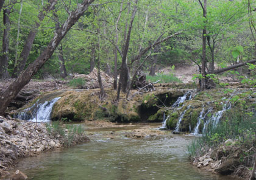 |
|
| This girl loves sweets almost as much as her mother does. You can tell she's had the cup pressed to her face! |
Scenery from Falls Creek |
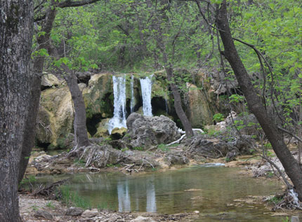 |
|
| Could these be the falls that are the namesake of the camp? Perhaps. | |